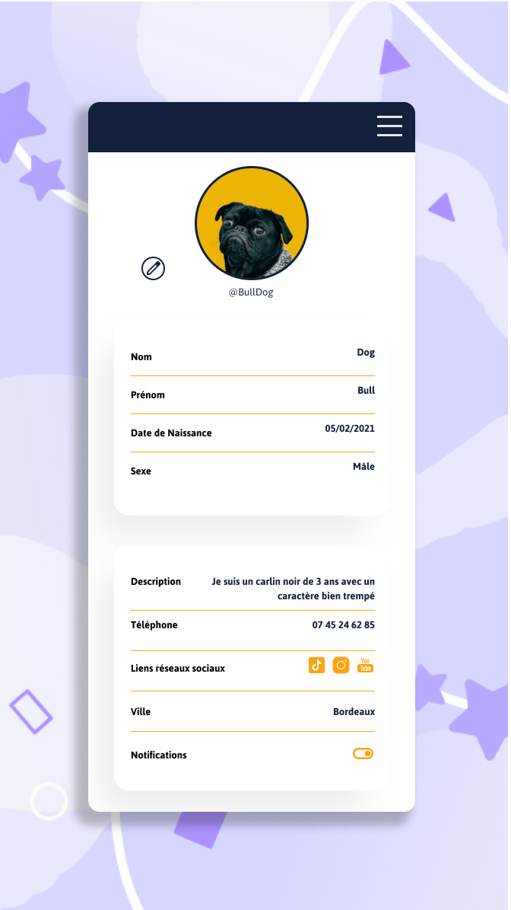
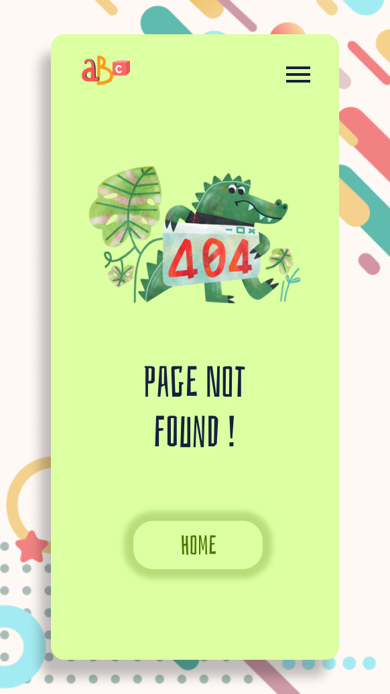
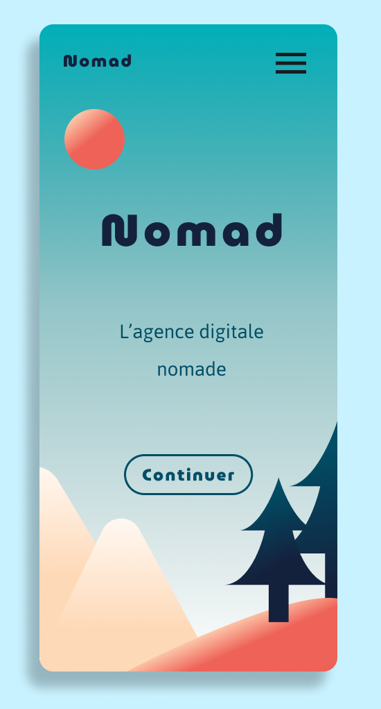
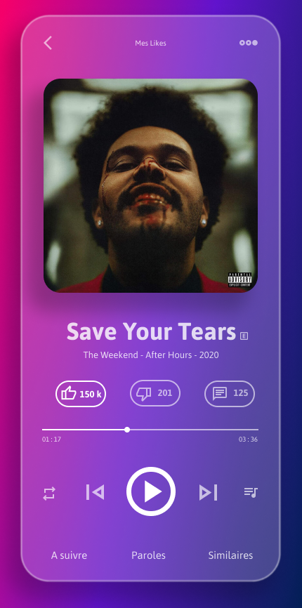

Projets codés (Html/Scss/Javascript)
01 ||
Accueil avec des menus dépliants
02 ||
Un dashboard pour le réseaux sociaux avec un thème dark/light
03 ||
Landing page Fylo
04 ||
Site de tourisme spacial
Projets UI Design (Figma)

05 ||
Profil utilisateur pour une application de rencontre canine

06 ||
Page 404 d'une maison d'édition jeunesse

07 ||
Landing page de l'agence digitale Nomad

08 ||
Interface d'une application de streaming